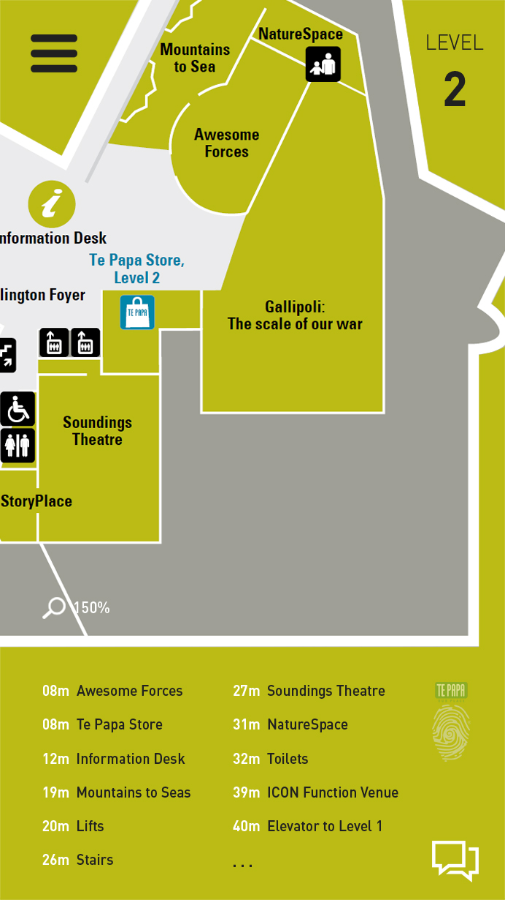
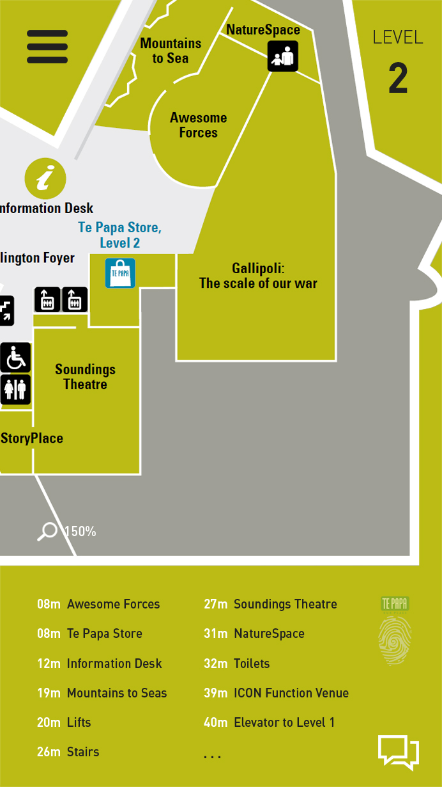

Based on my idea I’ve made a list of the topics I believe I’d need to cover in order to fully understand the technical aspects of my project and explain them below.
- Map of Te Papa - extraction of basic layout and exhibit areas and turning it into a web format
- How to make an interactive map and implement it effectively (optimized and simple)
- Exploration of indoor positioning system (IPS); WiFi, Bluetooth or grid system and how it would work on mobile/website integration
- Area activation based on indoor position of certain art exhibit info/guides/audio; hotspot beacons?
- Effective visual communication with device to show and track where you are shown on interactive map
- Using and implementing geolocation API into website
- Effective pathfinding, consideration of visual elements on map
- Live video chat or messaging system
+ RFID & WiFiThe possible options for an indoor positioning system is using WiFi, Bluetooth beacons or RFID, however RFID is used for object identification and cannot be used in tracking as well as requiring an expensive reader. With WiFi, the existing structure already inside Te Papa and can be utilized to enable the indoor navigation and area activated info and guides system. This system works without the need to turn on GPS on your phone, can also detect which level you’re on and can have a fairly large range (more WiFi access points placed across Te Papa for extended range and accuracy). However this system can be relatively inaccurate (anywhere from 5 - 15 metres) because or the size of Te Papa and also depending on the hardware used. Setting indoor tracking will either require an app to take measurements from several WiFi access points to determine the strength of the signal, or a server-based client that can handle that instead and won't need an app to work.
https://www.infsoft.com/blog-en/articleid/40/indoor-navigation-using-wifi-as-a-positioning-technology
+ Bluetooth BeaconsHowever with Bluetooth beacons, a greater accuracy can be achieved and can have “Bluetooth Low Energy” technology, meaning longer periods of operating on battery which has been designed with modern day consumers in mind. It works in the same way as the WiFi tracking system, requiring either an app or server-based client to make the measurements. It’s been said that beacons are a technology that is more powerful due to their flexibility because it is able to track in real time and with an accuracy of less than 5 meters.
https://www.bluetooth.com/what-is-bluetooth-technology/how-it-works/low-energy
https://www.infsoft.com/blog-en/articleid/60/indoor-tracking-using-beacons-or-rfid-what-are-the-differences
+ Ultra-widebandUltra wide-band (UWB) is a technology that can transmit a lot of data through a wide range of frequency bands at very low power, and can be compared to other short distance wireless technology like Bluetooth. What’s useful about ultrawide-band is that it can carry huge amounts of data over a distance of up to 70m using only 0.5milliwatts of power. As well as that, it’ll pass through walls and other obstacles more effectively than with solutions such as WiFi and beacons. Ultra wide-band has two main applications:
- Applications involving radar, in which the signal penetrates nearby surfaces but reflects surfaces that are farther away, allowing objects to be detected behind walls or other coverings.
- Voice and data transmission using digital pulses, allowing a very low powered and relatively low cost signal to carry information at very high rates within a restricted range.
With the use of ultra-wideband technology, it is possible to achieve indoor positioning/tracking and allow an accuracy of within centimeters. This accuracy can be used to power the “location activated guides” idea which can allow a person to view information on art or collection pieces within their vicinity.
http://whatis.techtarget.com/definition/ultra-wideband
https://www.pozyx.io/
+ Interactive map creation tools/informationOpenFloorPlan is an open source JavaScript library that can be used to manipulate and interact with SVG-based floor plans in HTML5 or NodeJS.
http://openfloorplan.org/
OpenLayers is also a JavaScript library which can be used to put a dynamic map into any web page. From the download page it says that it can display map tiles, vector data and markers loaded from any source. Apparently it’s easy to customize and extend with straight-forward CSS to style map controls, and different levels of the API for added functionality.
http://openlayers.org/
FLDraw is a software based solution for creating mobile-friendly dynamic/interactive maps.
http://www.fldraw.com/
+ Real-time chat systemThe reason why I’m looking into a possible chat system is that I thought it would a good way to connect people throughout Te Papa when they are looking at the interactive map. Possible uses would be to ask questions, allow people to meet up in person or just chat anonymously for fun. I’ve only looked into one example as I know this will require a client-server to function, but this guide seems simple enough to implement if I do wish to carry this further.
https://www.codeproject.com/Articles/637657/HTML-Real-Time-Chat-with-Websockets-jQuery-and-Sp
 
